Unisem - VVM obchodná
O nás
Korene siahajúce do roku 1966
Príbeh spoločnosti sa začína ešte pred jej oficiálnym vznikom – v roku 1966, keď na tomto mieste vznikla banáreň. Išlo o jednu z len troch banární na západnom Slovensku, ktoré v tom čase prijímali banány dovážané z Kanárskych ostrovov.
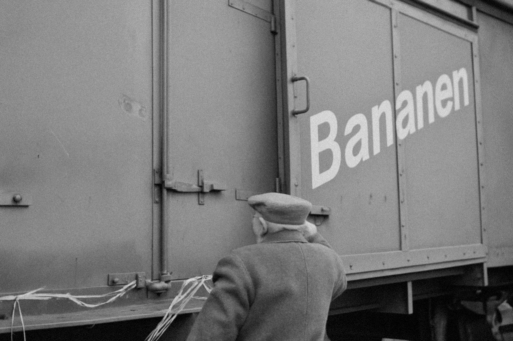
Založenie spoločnosti (1994)
V roku 1994 došlo k odkúpeniu priestorov banárne a vzniku rodinného podniku špecializovaného na veľkoobchod s ovocím a zeleninou. Od začiatku sa kládol dôraz na kvalitu, spoľahlivosť a osobný prístup k zákazníkom.
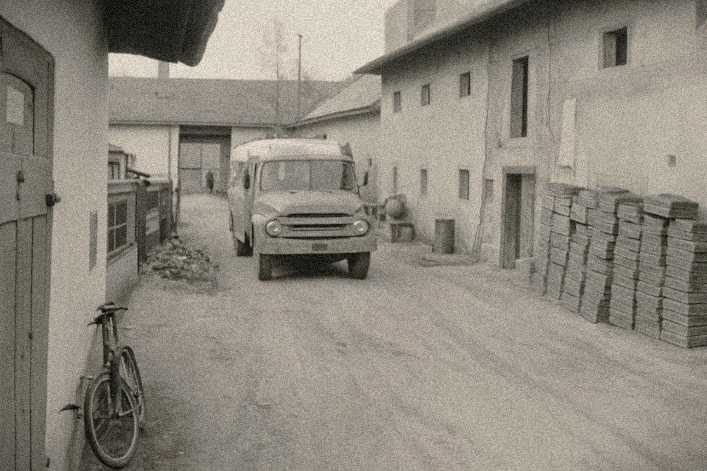
Rozvoj a diverzifikácia
(2000 – súčasnosť)
Firma rástla, rozšírila sortiment a otvorila obchod s bytovými doplnkami a záhradkárskymi potrebami, čím doplnila svoje veľkoobchodné aktivity aj o maloobchodný segment pre širokú verejnosť.
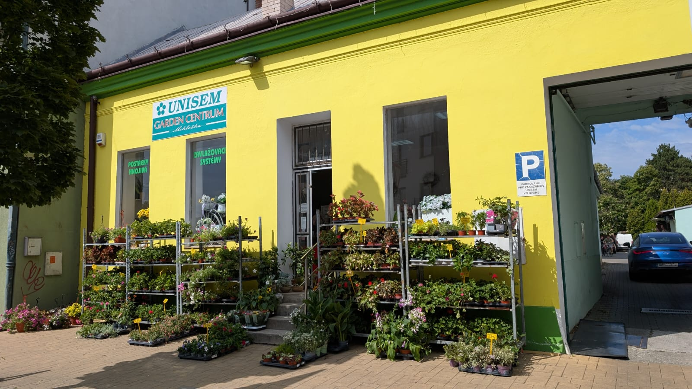
Galéria
Preskúmajte náš podnik
Ponuka nášho veľkoobchodu
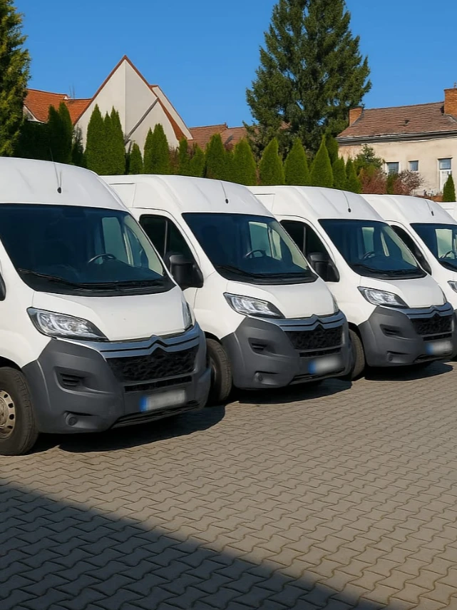
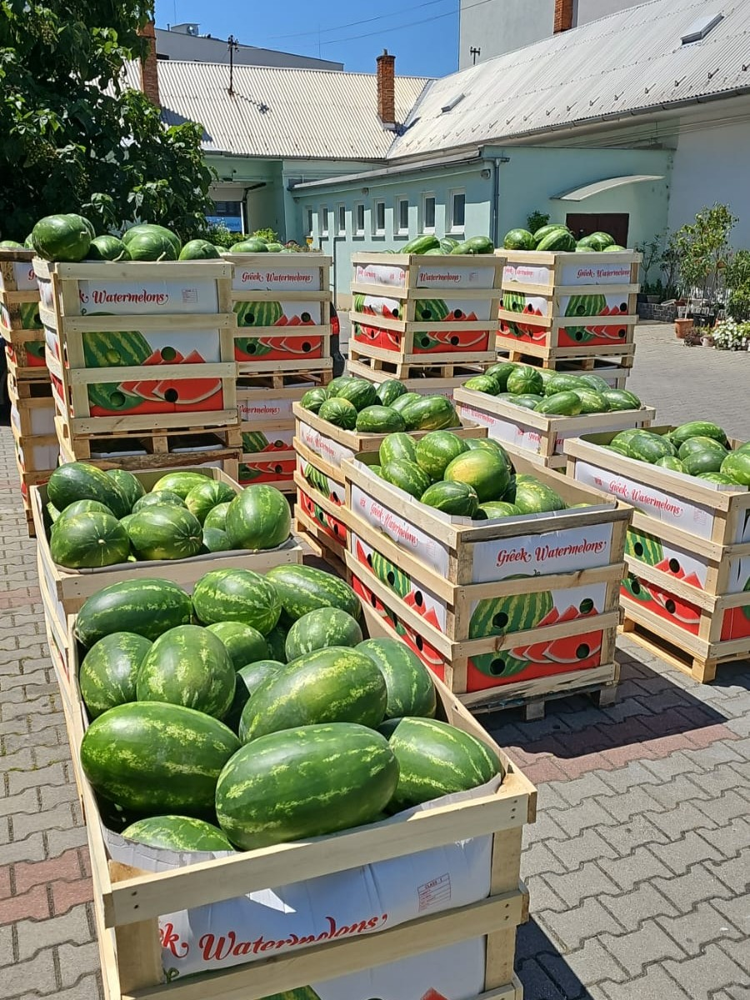
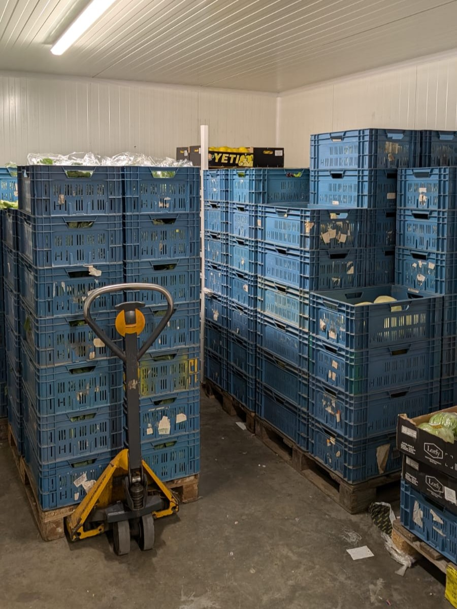
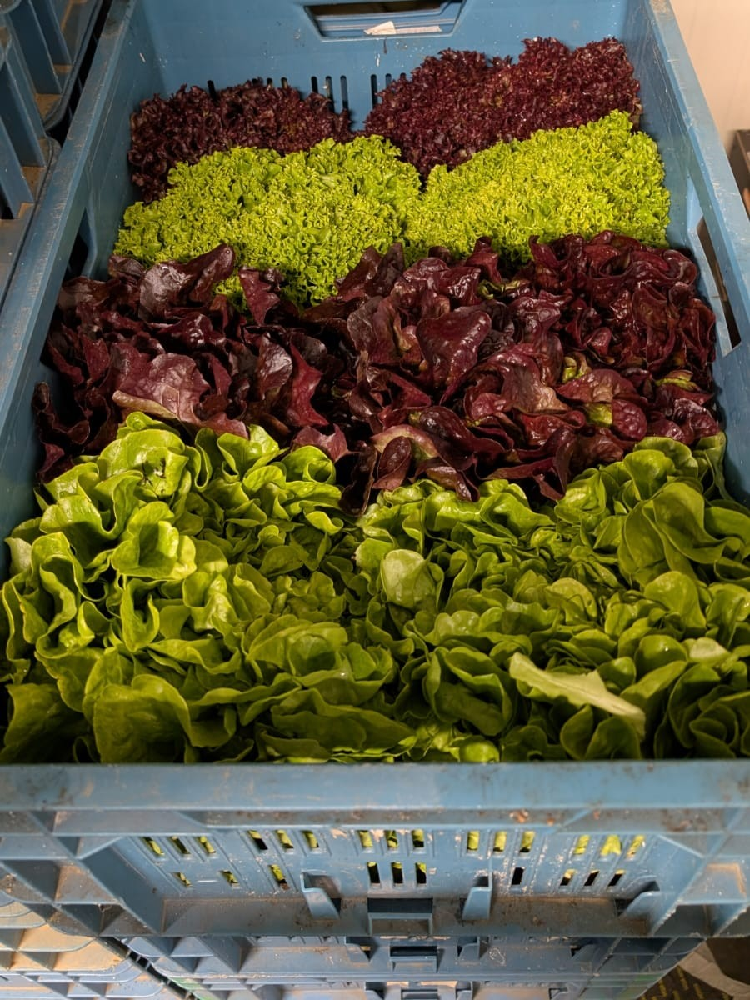
Naša predajňa
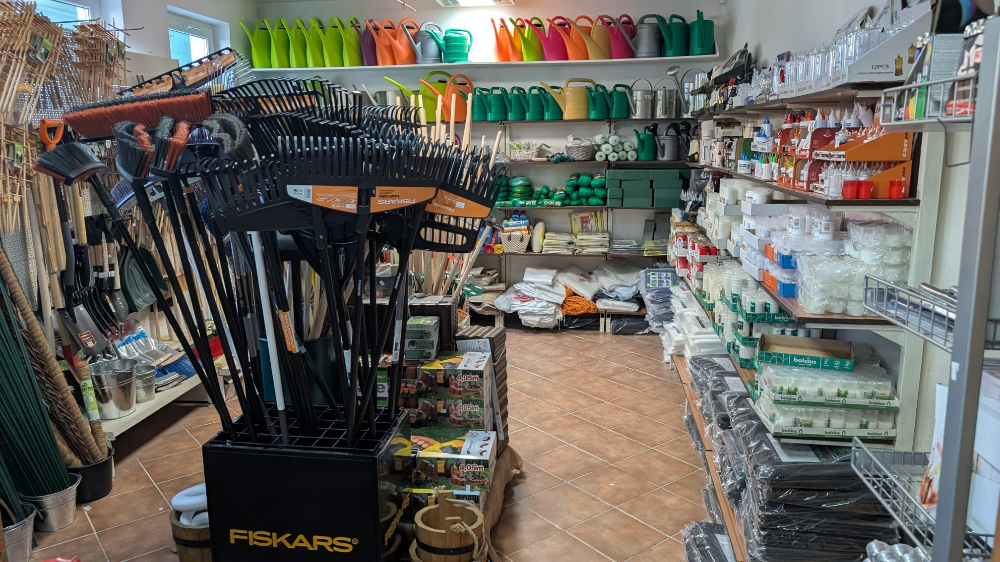
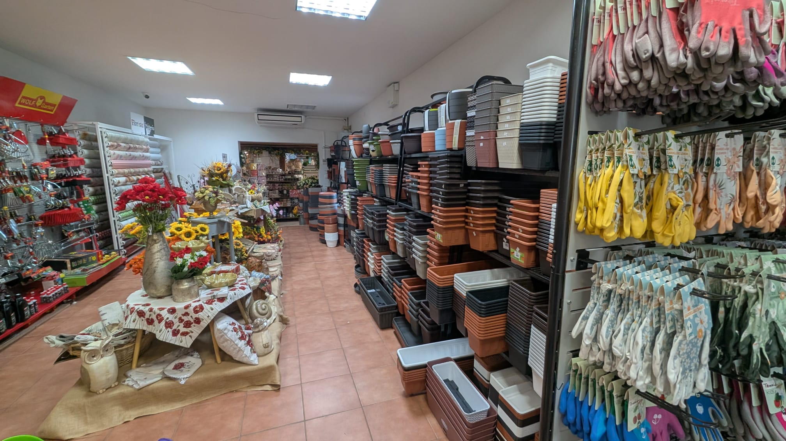
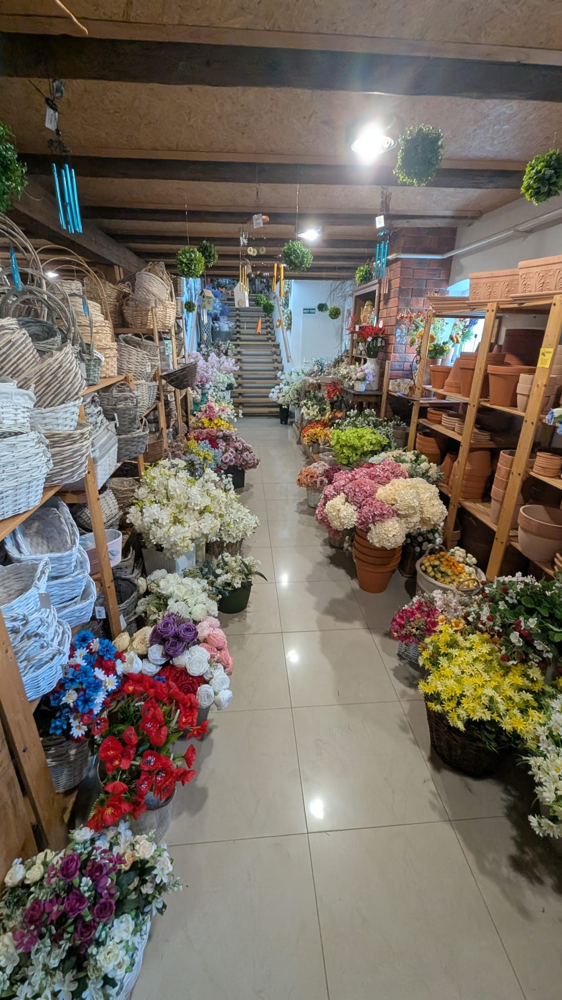
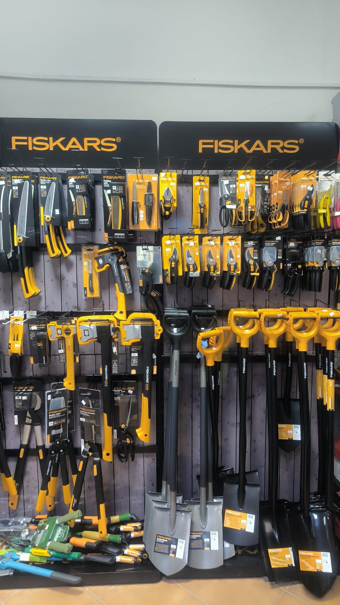
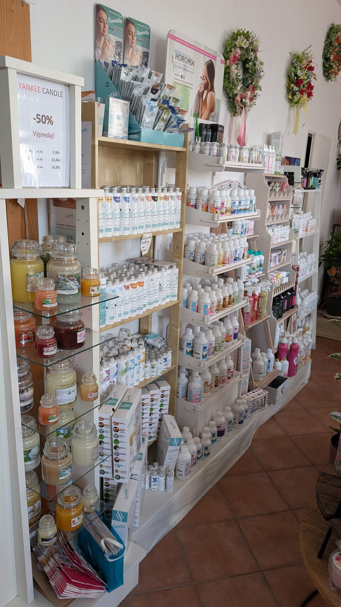
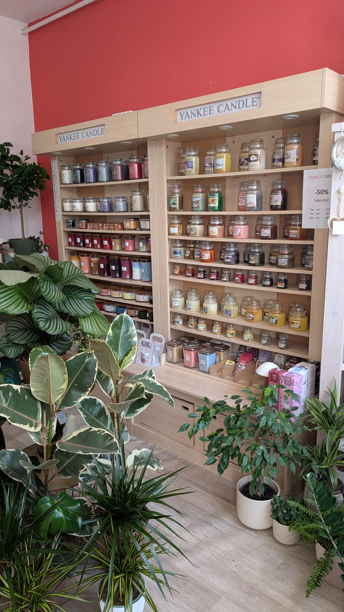
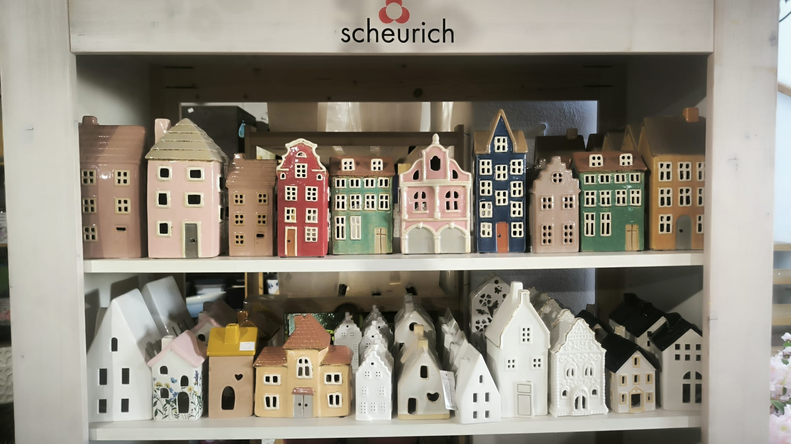
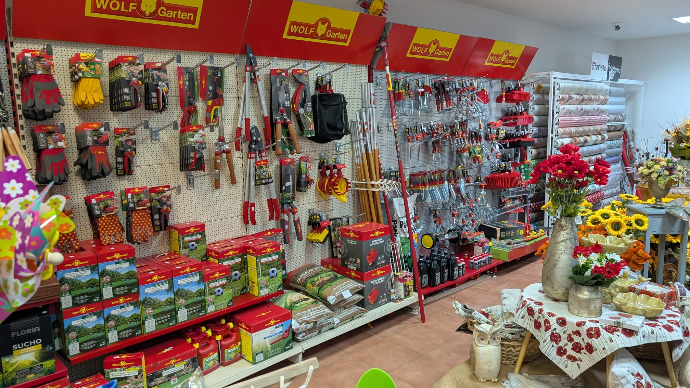